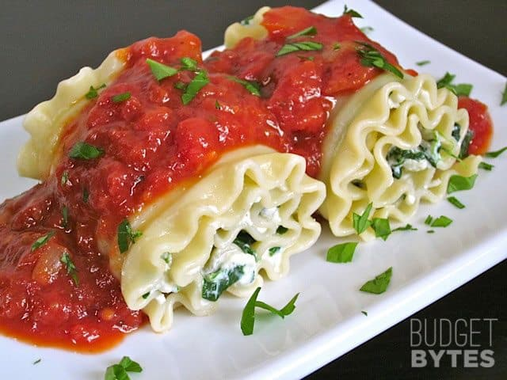

Lasagna

Description
These are Spinach Lasanga Rollups from Budget Bytes.
Ingredients
- 1 lb lasagna noodles
- 15oz ricotta
- 1 cup mozzarella, shredded
- 1/4 cup grated Parmesan
- 1 large egg
- 10oz frozen spinach
- 2 1/2 cups marinara sauce
- salt and pepper to taste
Steps
- Get a large pot of water boiling with a dash of salt. When it comes to a full boil, add the lasagna noodles and cook until al dente (soft but not soggy… about 12-15 minutes). When they are finished cooking, drain in a colander.
- I'm not typing out the rest of the steps.